Six Flags Magic Mountain Summer 2011
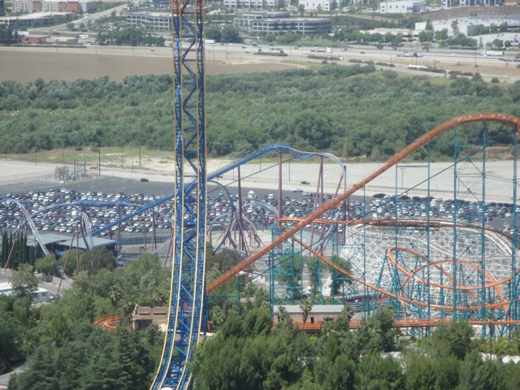
All right. Our big Six Flags Magic Mountain Summer Update has finally come. We took lots of little visits to Six Flags Magic Mountain throughout the summer and instead of making an update for each one, we just decided to once again have a giant update that will fill you in on everything.
Oh, and in case you didn't know, I've also been working at Six Flags Magic Mountain all summer. So you'll not only hear stories from my visits, but will even get to hear a couple of stories from on the job and see what it's like.
"Come with me if you want to live!!!!!"
All right. Visit #1. Ugh. Way too many schoolkids here today. =(
 Yep. The sign is right. This is one epic year for Six Flags Magic Mtn.
Yep. The sign is right. This is one epic year for Six Flags Magic Mtn.
I still see you original writing on Tatsu.
 Here, you can see them doing the pull through for Green Lantern.
Here, you can see them doing the pull through for Green Lantern.
More SFMM Construction.
 Yeah. I'm totally looking foreword to Green Lantern opening up.
Yeah. I'm totally looking foreword to Green Lantern opening up.
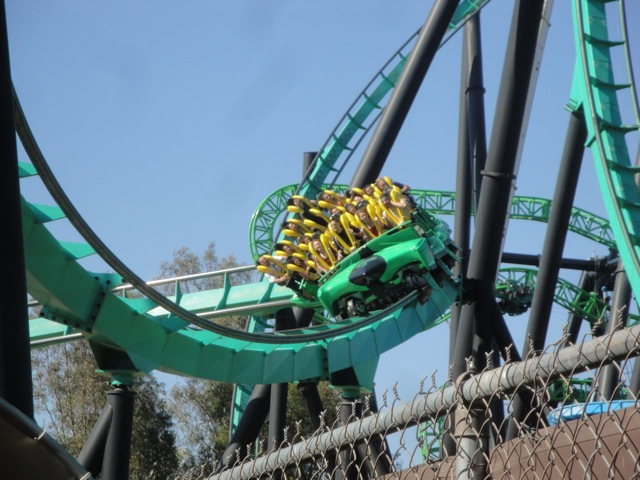
While Green Lantern may still not be open, at least Riddlers Revenge is open, and running pretty good the entire summer.
Ok. Employee Story Time. Now when you're working at an amusement park, you pretty know that sooner or later, you're gonna have to clean up puke (Well, except for the ever so lovely employees at Mt. Olympus). However, the idea of picking up dead mice doesn't exactly come to most peoples mind when thinking of working at a theme park. So this was a fun experience to have to deal with.
Oh, and they also had an Employees Only Dive Devil Party. They served hot dogs and snowcones and Dive Devil was only $5.00. So it was really cool to get on Dive Devil again. Though it's pretty much lost the fear, it's still a really fun ride.
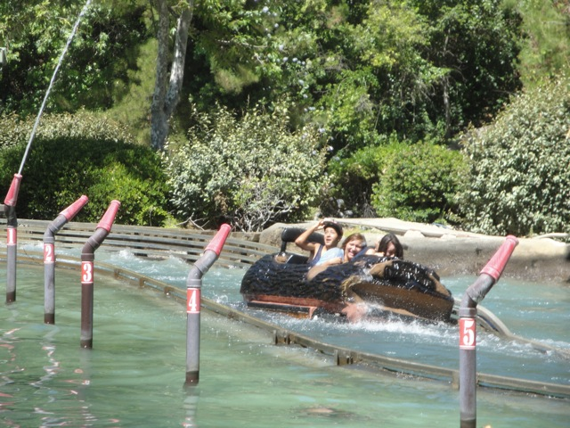
Onto Visit #2. We've soaked countless of other people on Log Jammer, but no one comes close to Pink Sweater Girl.
 In other sad news, we can't ride Canyon Blaster anymore. Apparently, they now implemented the must be accompinied by a child rule. F*cking Lame. =(
In other sad news, we can't ride Canyon Blaster anymore. Apparently, they now implemented the must be accompinied by a child rule. F*cking Lame. =(
 In case you couldn't tell, today was the Green Lantern VIP Party. So later that night, we got on Green Lantern for the first time. (I managed to go to the last hour of the party since luckily, my shift ended early.)
In case you couldn't tell, today was the Green Lantern VIP Party. So later that night, we got on Green Lantern for the first time. (I managed to go to the last hour of the party since luckily, my shift ended early.)
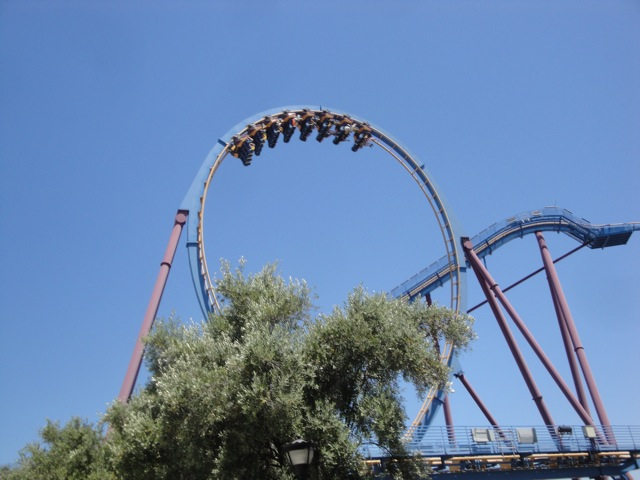
Up next was Scream. It was running really well that day.
All right. For lunch, we decided to try out Longhorn's Replacement Resteraunt. JB's BBQ.
While I really liked it when they were serving it at an Employee BBQ, it was really dissapointing when it was served to guests. The bun seemed stale and the meat not nearly as fresh as it was at Longhorns.
 While we won't get on Green Lantern till later tonight, we can at least get on SFMM's other new ride. Backwards Superman.
While we won't get on Green Lantern till later tonight, we can at least get on SFMM's other new ride. Backwards Superman.
NOT COOL!!!!!! Let me just tell you now. If I catch you doing something like this, I will not be kind, nor will I be forgiving.
Aww. Looks like Superman has defeateded the Riddler. Ripped cape up. =(
 All right. Time for another Employee Story!!! While working at the lockers by Apocalypse (back when we enforced the locker policy), the Locker Attendent found a Marijuana Joint just laying on the ground. Now, I don't have a problem with marijuana at all. I've never smoked it, but I know several people who have, voted yes on Prop 19, and overall have a legalize everything attitude towards drugs. But HOW F*CKING STUPID DO YOU HAVE TO BE TO THINK IT'S OK TO SMOKE A JOINT IN SFMM!!!!!! Tell me, did this guy also lose his hat on a roller coaster? Because if he did...
All right. Time for another Employee Story!!! While working at the lockers by Apocalypse (back when we enforced the locker policy), the Locker Attendent found a Marijuana Joint just laying on the ground. Now, I don't have a problem with marijuana at all. I've never smoked it, but I know several people who have, voted yes on Prop 19, and overall have a legalize everything attitude towards drugs. But HOW F*CKING STUPID DO YOU HAVE TO BE TO THINK IT'S OK TO SMOKE A JOINT IN SFMM!!!!!! Tell me, did this guy also lose his hat on a roller coaster? Because if he did...
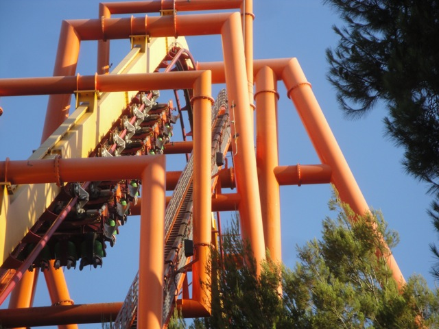
Another really cool part of working at SFMM. Lift walks. I'll just say this now, walking up Tatsu's lifthill is freaking awesome. Just the freedom of being up there and walking up that narrow stairway is really cool. Though it's not scary. No, if you want scary, just do a brake check. You may not notice this when on the ride, but the Tatsu cars are freaking wide!!! And the part of the ride after the first main course brakes, goes through the dip before hitting the final brake run. While it doesn't feel fast on the ride, IT SURE AS HELL FEELS FAST WHEN YOU'RE JUST INCHES AWAY FROM THE TRAIN!!!! Seriously, just get a little closer and you'd be killed. Now that's scary.
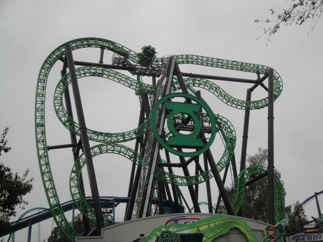
All right. Visit #3. This visit begins with a special Employee Party that let all the employees get on Green Lantern.
And they served Green Pancakes. With whipped cream and strawberries.
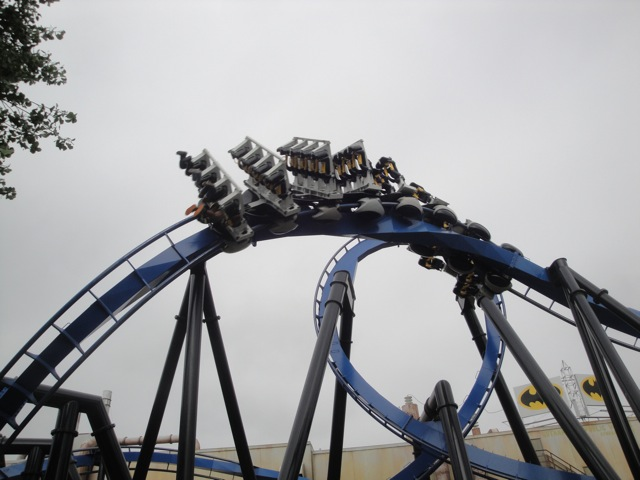
Oh, and more good news. Batman opened up with Green Lantern. So it was good to get on that today as well.
 Apocalypse was running great. I mean, it was just completely hauling ass around the course.
Apocalypse was running great. I mean, it was just completely hauling ass around the course.
 Hey Cody & Giovanni!!! What's up!!!
Hey Cody & Giovanni!!! What's up!!!
 Well, since JB's BBQ isn't that good for guests and I'm tired of supporting a Wendys that jacks up their prices, Antonio introduced us to Chick-A Fil. And I'm glad he did. This resteraunt kicks ass!!!! Even if their beliefs don't.
Well, since JB's BBQ isn't that good for guests and I'm tired of supporting a Wendys that jacks up their prices, Antonio introduced us to Chick-A Fil. And I'm glad he did. This resteraunt kicks ass!!!! Even if their beliefs don't.
All right. Time for another Employee Story. This one deals with by far the worst guest I ever had to deal with working with. I've had several people complain about the park to me. And that's fine with me. If you somehow found Six Flags Magic Mountain to be of Mount Olympus quality, then I may disagree or not understand, but I can at least respect that. But this woman was a total bitch and went over the edge big time. This woman with her kid comes to ride Roaring Rapids, but unfortunetly, her kid is too short to ride. The kid starts to cry. Sad, but not uncommon. I've seen dozens upon dozens of kids cry because they were too short to ride. But then her bitch of a mother opens her mouth and all hell breaks loose. She starts spewing out all sorts of crap and says "What the hell are you talking about!!! She too, is tall enough!!! You're just f*cking blind!!! That's all!!!!" I then have to say, and unfortuently, I have to say it polietely, "I'm sorry, but she's not tall enough to ride Roaring Rapids. But she can ride Jet Stream and..." Then the breeder cuts me off and shouts "SHE'S ALREADY BEEN ON THOSE RIDES YOU MORON!!!! SHE'S BEEN ON EVERY RIDE IN THIS PARK!!!! DON'T YOU TELL ME THAT SHE CAN'T RIDE THIS RIDE!!!!!!!" And as if that wasn't bad enough, the people in the line start to boo me, and I get all sorts of comments like "I hope you're happy that you made a litte girl cry.", "Why do you have to be so mean?", and my personal favorite "Oh Come on Kevin!!! Take one for the team!!!" TAKE ONE FOR THE TEAM!!!!! DO YOU SERIOUSLY EXPECT ME TO RISK HER SAFTEY AND MY JOB SO SHE CAN GET ON!!!!! First of all, the height restrictions are there for saftey reasons!!! Yeah, it sucks that she can't ride, but IT'S FOR F*CKING SAFTEY REASONS!!!!!!! And second of all, do you seriously expect me to risk getting fired, in todays economy, when getting a job, especially at 19 years old, is nearly impossible. ESPECIALLY in Ventura, and at CSUN. Do you seriously think I should risk this job, when I probably wouldn't be able to get another one, especially since even if another person took interest in me, they would not hire me after seeing that I got fired from my last job for violating their saftey regulations. Is it seriously worth it you stupid bystander!!!!! The breeder than goes on a rampage, shouting all sorts of stuff at me. I can't remember most of it. But what I particuarly remember is her asking me in just about the rudest tone ever "How long have you been working here?" That seriously pissed me off. I've had guests with unpleasent experiences say lots of stuff to me. Some of those quotes include "I'M NEVER COMING TO MAGIC MTN EVER AGAIN!!!!!", "I'd quit if I were you. There are so many better companies you can work for than this awful awful one.", and "Can you tell me where Guest Relations is? I have a long list of complaints to give to them." I'm fine with those types of quotes. If you have a problem with Six Flags Magic Mountain and you view the park as Mt. Olympus, that's fine. But stuff like "How long have you been working here?" Well lady, long enough to know that your daughter isn't tall enough to ride and you're not good enough to be breathing the air on this planet bitch!!! Now, I obviously didn't say that to her face, but that's sure as hell what I was thinking in my head at the time!!! You do not talk like that to an operator!!! Hell, I didn't say that to the Millnium Force Ride Operator!!!! THE F*CKING MILLENIUM FORCE RIDE OPERATOR!!!! THE WORST RIDE OPERATOR ON THE EARTH!!! And I didn't even say that to her face, partly because I knew the answer. Too long. But still!!! What a bitch!!!! Without a doubt the worst human being I've had to deal with when working at Six Flags Magic Mountain.
That's enough ranting for now. Onto Visit #4. Our day started off of course with a ride on Log Jammer.
"This was from the ride!!!! I swear it was!!!!!"
 While we didn't get a Morning Goliath Marathon, we did get a really nice front seat ride.
While we didn't get a Morning Goliath Marathon, we did get a really nice front seat ride.
 Unlike Green Lantern. It's been running REALLY BADLY lately. It stops on the midcourse brake for a minute and a half, which REALLY kills the momentum of the ride and reduces the spinning. F*CKING LAME!!!! =(
Unlike Green Lantern. It's been running REALLY BADLY lately. It stops on the midcourse brake for a minute and a half, which REALLY kills the momentum of the ride and reduces the spinning. F*CKING LAME!!!! =(
 "Hey, as long as I'm not at Six Flags Discovory Kingdom, I'm happy."
"Hey, as long as I'm not at Six Flags Discovory Kingdom, I'm happy."
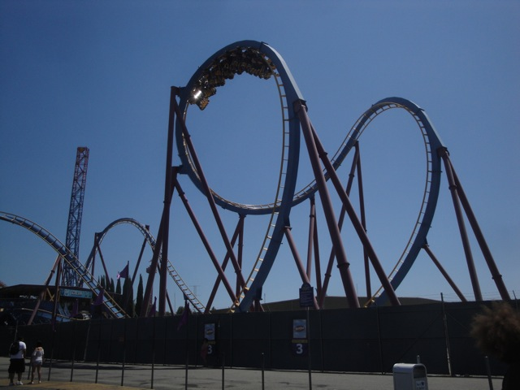
Dude!! Scream has been running really slow lately. It just hangs in all the inversions!! =)
This day suddenly just became epic.
"Oh boy!!! I've always wanted to have my name on an Ing!!!"
 "Anyone else want to go to Eduardos Grill for dinner tonight?"
"Anyone else want to go to Eduardos Grill for dinner tonight?"
Hey wait? I thought you couldn't ride Canyon Blaster without a kid anymore? Oh wait, that employee was just full of sh*t.
"Sometimes, I dream about cheese."
Later that night, there was another Employee Party, and I could take up to 5 friends. So I dragged Cody, Alex, and Jacob to the party, where we watched the Goonies in the Wavepool.
"OM NOM NOM NOM NOM NOM!!!!!!!!"
Hanging out in the wavepool was awesome and the Goonies is an awesome movie. What's not to like?
All right. Time for yet another funny Employee Story. One night, this group of girls were riding Roaring Rapids. They were loud and just not listening to anything. Until I said "This is a water ride, so you will get wet, and you will most likely get soaked." And then one of the girls screamed "SOAKED!!!!? I CAN'T GET SOAKED!!!!! I HAVE 17 CELL PHONES IN THIS VERY EXPENSIVE BAG!!!!!! IF THEY GET WET, I WILL KILL YOU KEVIN!!!!!!!" Then one of her friends said "She's not joking around. She remembers faces very well. You can't escape." I then sent the boat as the girl shouted "REMEMBER!!!!! DEAD CELL PHONES MEAN YOU'RE DEAD!!!!!!" Then, a couple minutes later, after their ride, all the girls came back soaking wet, and were cursing my name. They got off and shouted all sorts of stuff, like "KEVIN!!!!!! I GOT SOAKED!!!!!!", "I THOUGHT YOU WERE JUST JOKING MAN!!!!!!", "KEVIN!!!!!!! YOU RUINED MY SUEDE SHOES!!!!! THEY COST $75.00!!!!!! I HOPE YOU HAVE THE MONEY TO REPLACE THEM!!!!!!" and of course "IF MY CELL PHONES ARE DEAD, YOU'RE DEAD!!!!" I tried my hardest to not laugh like a hyena right on the stop, but It was just impossible to not laugh as they shouted "STOP LAUGHING KEVIN!!!!!! THIS IS SERIOUS!!!! THESE SUEDE SHOES WERE VERY IMPORTANT TO ME!!!!!!!!"
All right. Onto Visit #5. This was originally planned on being a Cliff Jumping Day at Hermit Falls, but considering just how crowded it was, it would be impossible to jump anyway since all the kids would be like "Screw you, I want to swim." So we just decided to go to Six Flags Magic Mountain.
Why is the Fright Fest Theming out in August?
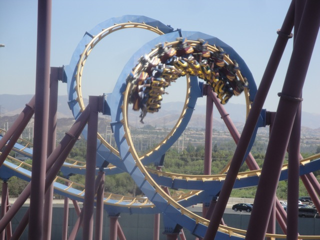
The wheels on the bus go round and round.
They were sampling a new product that was basically a touch screen guitar. On one hand, this is awesome. You can just pick up a guitar and just start playing. On the other hand, are we really getting that lazy that we can't learn to play a real guitar and have to settle for a touch screen one?
Well since it was Sunday, we couldn't go to Chick-Fil A. (Stupid stupid policy) So we instead went to Tommy Burger, which is just as good.
All right. Visit #6. This is our yearly Six Flags Hurricane Harbor visit. We usually make this a seperate update, but we figured. Why not just throw Hurricane Harbor into the mega update.
When we were going to slide down the two tube slides of Black Snake Summit, Cody's raft just decided to have a mind of it's own and just slid down the slide on its own.
 Taboo Tower is still awesome. Especially Secret Passage. Such an awesome slide.
Taboo Tower is still awesome. Especially Secret Passage. Such an awesome slide.
 Come on!!!! Quit being pussies and get your asses on Venom Drop!!!!
Come on!!!! Quit being pussies and get your asses on Venom Drop!!!!
Looks like someone tossed their cookies. Should I eat them?"
 Ok. Story time, though this time, it's not an employee story. After going to SFHH, we were on our way to Chick-A Fil, but when I looked for my wallet in my backpack, it was nowhere to be found. I essentially flipped it inside out and could not find it anywhere, nor could I find it anywhere in my car. It wasn't under any of the seats in my car or underneath any of the trash scattered across my floor. So yeah. This was far more serious than my last near wallet miss experience. So if you ever wanted to see me go crazy, this would've been the day to see me. So in a mad rush, I left Cody and Gavin at Chick-Fil A and rushed back to Six Flags Hurricane Harbor. I looked all around where we were and the Lost'N'Found, but never found it. I was about to call my bank and tell them to cancel my debit card, when through hopeless searching, (you know, the type of searching when you know you won't find anything, but keep searching because you just can't stop, even though you won't find it), I found my wallet in a pocket of my backpack that I completely did not know existed along with several papers way back from High School. Without a doubt one of the scariest things to happen to me. (Why has this been happening to me alot, not just with my wallet, but with my video camera and my car as well?)
Ok. Story time, though this time, it's not an employee story. After going to SFHH, we were on our way to Chick-A Fil, but when I looked for my wallet in my backpack, it was nowhere to be found. I essentially flipped it inside out and could not find it anywhere, nor could I find it anywhere in my car. It wasn't under any of the seats in my car or underneath any of the trash scattered across my floor. So yeah. This was far more serious than my last near wallet miss experience. So if you ever wanted to see me go crazy, this would've been the day to see me. So in a mad rush, I left Cody and Gavin at Chick-Fil A and rushed back to Six Flags Hurricane Harbor. I looked all around where we were and the Lost'N'Found, but never found it. I was about to call my bank and tell them to cancel my debit card, when through hopeless searching, (you know, the type of searching when you know you won't find anything, but keep searching because you just can't stop, even though you won't find it), I found my wallet in a pocket of my backpack that I completely did not know existed along with several papers way back from High School. Without a doubt one of the scariest things to happen to me. (Why has this been happening to me alot, not just with my wallet, but with my video camera and my car as well?)
 And finally, we come to Visit #7. We found this band in the front of the park, which is awesome. These guys should totally head back towards Studio 6F and replace that sh*tty Acapelo group.
And finally, we come to Visit #7. We found this band in the front of the park, which is awesome. These guys should totally head back towards Studio 6F and replace that sh*tty Acapelo group.
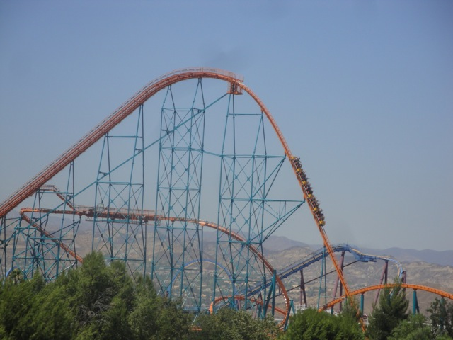
Yep. We rode Goliath, and man, was it running FAST!!!!!
Hey Six Flags Great Adventure!!! Look what I can order here at Six Flags Magic Mountain!!!!?
Best Soda Ever. Nuff Said.
"Dude!!!! Where's my accordion!!!?"
 Yeah. X2 is still one of the best coasters ever ridden by Incrediblecoasters.
Yeah. X2 is still one of the best coasters ever ridden by Incrediblecoasters.
If you ever needed proof that Cody isn't a human, just use this photo.
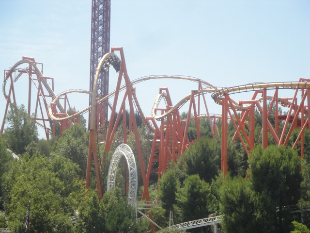
And that pretty much sums up all our visits to Six Flags Magic Mountain this summer. Hope you enjoyed this monster of an update.
Home